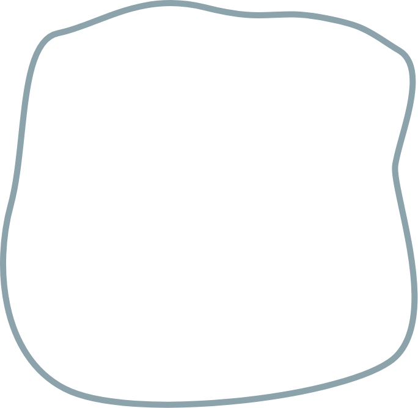
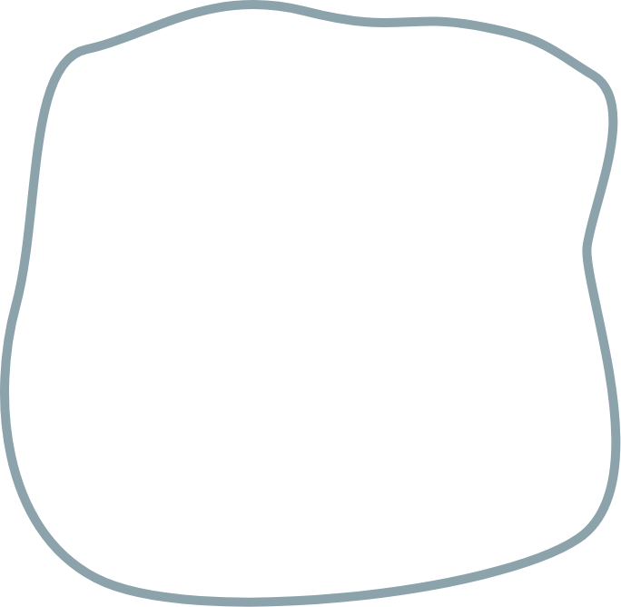

Yeliz Erbas
design student
amsterdam

design student
amsterdam
 


Mijn naam is Yeliz, zoals je HIER boven al heel groot in beeld zag. Ik ben 19 jaar oud en kom uit de beste stad van Nederland, Haarlem natuurlijk💅. Ik ben een CMD student aan de hoge school van Amsterdam. Ik zit in mijn tweede jaar. In mijn vrije tijd ga ik graag naar de sportschool en doe ik gezellig een drankje met vrienden. Meer over mij te weten komen?
 Over mij
Over mij
Ik vind het super leuk om te illustreren, designen maar ook om code te schrijven. Ik zit in mijn tweede jaar van Communicatie en multimedia design, dus ik heb al een aantal projecten gedaan. lijkt het je leuk om mijn werk te zien, klik op de knop….Klik nou maar…je wilt het wel zien👀
mijn werk